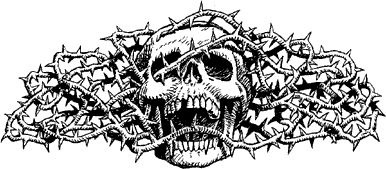

242
For an hour you follow the muddy track as it twists a tortuous route through the trees of this accursed realm. Baleful eyes observe your passing yet you choose to ignore them for you sense that these watchers pose no real threat to your safety. They are lowly animals that possess little intelligence and even less courage (though you fancy the latter would not be so if you were weak or wounded). The path ascends a ridge, and then drops steeply towards the floor of a mist-enshrouded valley where you happen upon something that brings you to a halt.
A moss-grown skull lies on the path ahead, its jawbone agape as if uttering a silent scream. Beyond it lie two skeletons in rotting mail, half-buried in a nest of saw-toothed briar. Then, through the mist, you see weapons, rusted and mouldering, and the grisly remains of a warhorse, its armoured rider slumped astride its ruined back. You are advancing towards the horse when you hear a sound that draws your eyes away to the east. It is a busy, squeaking noise, muffled by the dense undergrowth.
{kind=link}

You leave the path and melt into the tangled trees. With careful steps you edge towards the noise, your senses straining to extract information from your surroundings until you become almost a part of the forest itself. Then you detect movement ahead and, from the cover of a thorny bough, you draw your weapon and wait in readiness.
A line of rat-like creatures, each as tall as a youth, is wending its way along the forest path. They are armed with crude and rusty weapons and clothed in rags that once were worn by human soldiers. Your keen sense of smell detects the vile aroma of disease which hangs heavy about these loathsome rat-men, and at once you realize that these must be the Vazhag that Rimoah spoke about. Shielded by your Magnakai skills, you watch in silence as they file past your hiding place and slowly disappear. When you are sure they have gone, you sheathe your weapon and continue your trek towards Mogaruith.